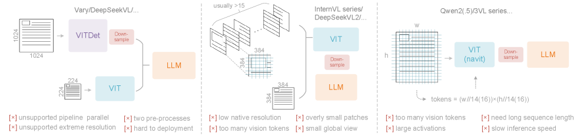
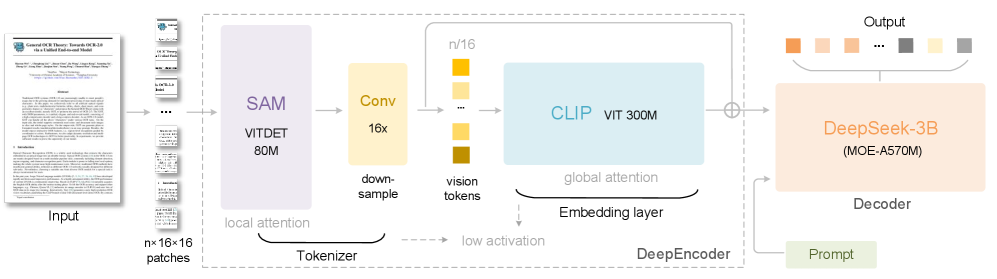
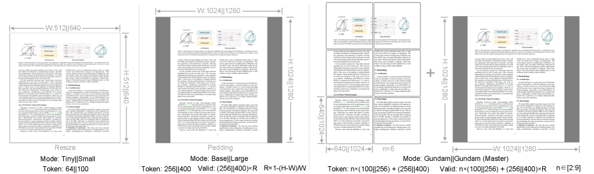
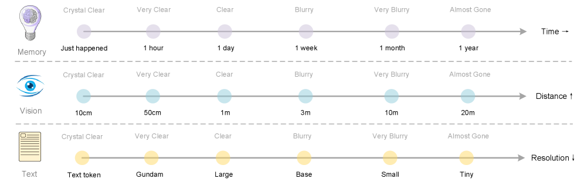
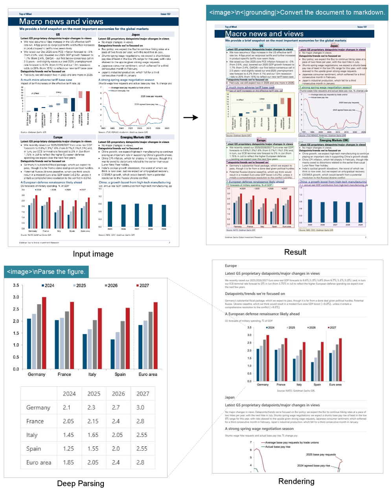
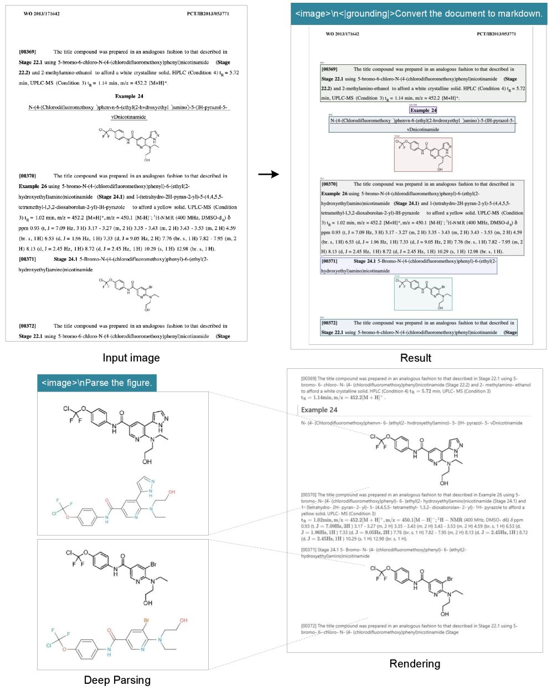
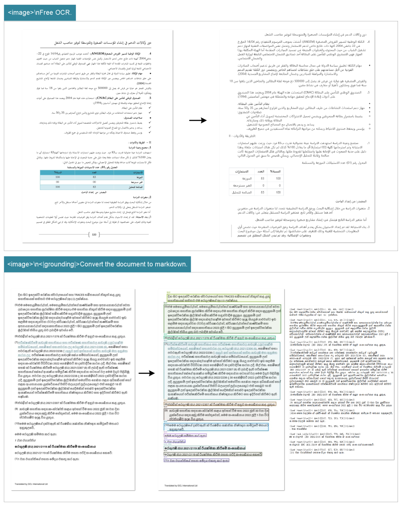
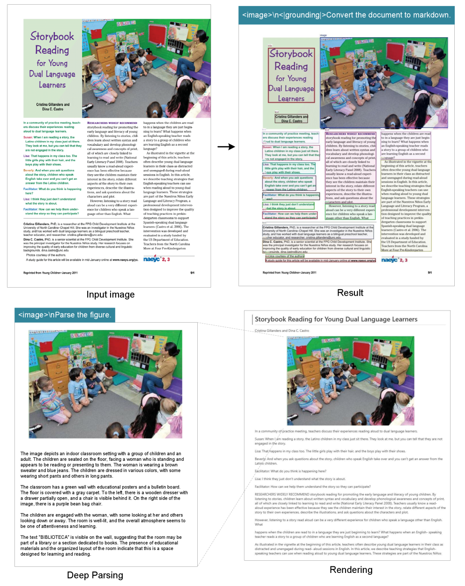
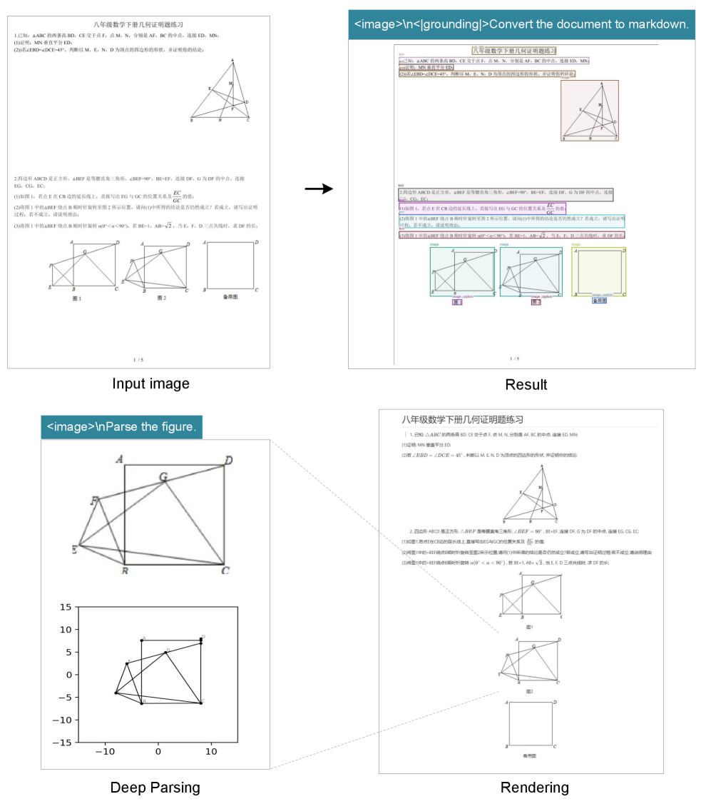
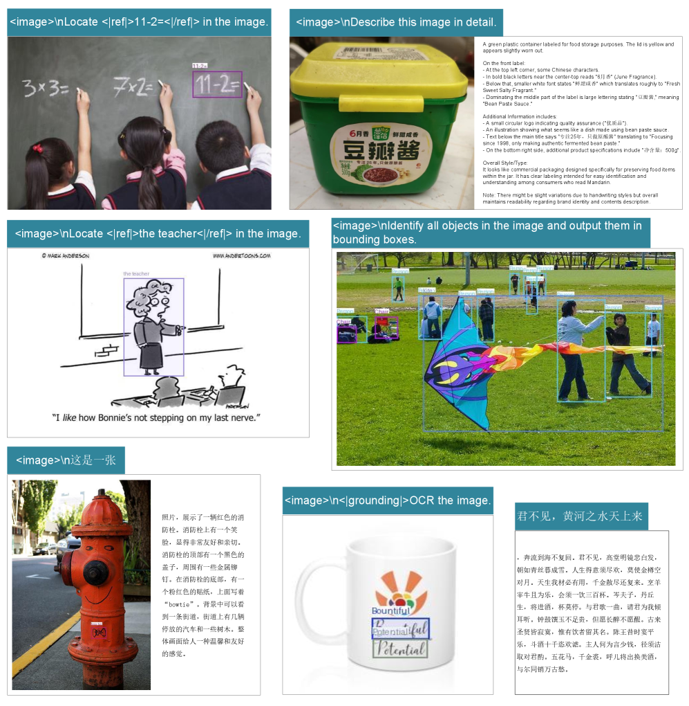

用一张「图」装下一千个字
DeepSeek-OCR 把这件事当作一个可量化的科学问题来研究：解码 1000 个文字，到底最少需要几个视觉 token？答案是——在 10× 压缩内几乎无损（97% 精度），20× 压缩仍有约 60%。
TL;DR
大模型处理长文本，算力随序列长度平方级增长。本文提出一个反直觉的思路：把文字「拍成图片」，再用视觉编码器压成极少的视觉 token，交给语言模型「读」回来——因为一张含文字的图，用的 token 数远少于等价的数字文本。
为此他们设计了核心引擎 DeepEncoder（串联 SAM 局部注意力 → 16× 卷积压缩器 → CLIP 全局注意力），以及一个 3B-MoE（实际激活 570M）解码器，组成 DeepSeek-OCR。它在 OmniDocBench 上用最少的视觉 token 拿到端到端 SOTA，单张 A100 一天能造 20 万+ 页训练数据。
OCR 解码精度
仍保留的精度
GOT-OCR2.0(256)
每日生产页数
01长文本的代价，与一个大胆的猜想
LLM 处理长文本时，注意力的开销随 token 数平方级膨胀。于是大家想尽办法压缩文本上下文。本文换了个角度：既然多模态系统反正要带一个视觉编码器，能不能让「视觉」本身成为高效的文本压缩介质？
核心观察很朴素：一页文档拍成图片后，用极少的视觉 token 就能携带原本需要大量文本 token 才能表达的信息。OCR 任务恰好是验证这个想法的理想试验台——它天然构成「视觉 → 文本」的压缩-解压映射，而且有可量化的精度指标。
"for a document containing 1000 words, how many vision tokens are at least needed for decoding? ... a picture is worth a thousand words."
📌 全文的「北极星」问题：解码 1000 字的文档，至少需要多少视觉 token？这正是"一图胜千言"的可量化版本。现有 OCR 模型都没正面回答过它。
- 动机：把视觉编码器从「做 VQA」重新定位为「帮 LLM 更高效地处理文字信息」。
- 压缩比定义：压缩比 = 真值文本 token 数 ÷ 模型实际用的视觉 token 数。
- 意义：若可行，长上下文、对话历史、甚至 LLM 的「记忆遗忘机制」都能借此重新设计。
02现有 VLM 的视觉编码器，卡在哪？
要做光学压缩，需要一个「能吃高分辨率、激活内存低、视觉 token 少、支持多分辨率」的编码器。但论文指出，当前开源 VLM 的三类主流编码器各有硬伤——这正是 DeepEncoder 的设计动机。

- 双塔架构（Vary 类）：并行接一个 SAM 编码器扩充视觉词表来吃高分辨率。参数与激活可控，但需要双重图像预处理，部署复杂、训练时编码器难做流水线并行。
- 分块 / Tile 架构（InternVL2.0 类）：把大图切成小块并行处理，降低激活内存。但原生分辨率偏低（常 <512×512），大图被切得太碎，产生海量视觉 token。
- 自适应分辨率（Qwen2-VL 类）：用 NaViT 范式直接按 patch 处理整图，分辨率灵活。但大图会带来巨大激活内存（易爆显存），训练需要超长序列，长视觉 token 还会拖慢推理的 prefill 与生成。
端到端 OCR 模型：进步很大，但没回答关键问题
从 Nougat（arXiv 学术论文 OCR）到 GOT-OCR2.0（拓展到图表等合成图解析），端到端 OCR 把传统「检测+识别」多专家流水线大幅简化。Qwen-VL、InternVL 系列也在不断增强文档 OCR 能力。但论文强调：没有人系统回答过「一页文档最少需要多少视觉 token」这个压缩边界问题——这正是本文要填的空白。
03DeepSeek-OCR：DeepEncoder + MoE 解码器
整体是一个统一的端到端 VLM：编码器（DeepEncoder）负责把图像压成极少的视觉 token，解码器（DeepSeek-3B-MoE）根据这些 token + 提示词重建出文本。下面这张是全文最重要的架构图。

- DeepEncoder（约 380M）：是整个模型的核心引擎，由三部分串联——SAM 负责「感知」（以窗口注意力为主），CLIP 负责「知识」（密集全局注意力），中间一个 16× token 压缩器 把两者桥接起来。
- SAM-base（约 80M）：以窗口注意力处理大量 patch token。因为是局部注意力且参数小，即使输入高分辨率，激活内存也可控。
- 16× 卷积压缩器：在进入昂贵的全局注意力之前，先把视觉 token 数砍掉 16 倍——这是「少 token」的关键开关。
- CLIP-large（约 300M）：对已被压缩的少量 token 做密集全局注意力，注入语义知识；其原始的 patch embedding 层被移除（输入已不是图像而是上游 token）。
- DeepSeek-3B-MoE 解码器：从压缩后的视觉 token 重建文本。推理时仅激活 6/64 路由专家 + 2 共享专家，约 570M 激活参数，兼具 3B 的表达力与 500M 的推理效率。
DeepEncoder 内部：token 是怎么一步步被压下去的
关键巧思在于「先局部、再压缩、后全局」的串联顺序。下面这个分步演示，跟着一张 1024×1024 的图走一遍，看视觉 token 数如何从 4096 一路降到 256：
这套设计同时满足了前面那个「不可能三角」：SAM 阶段 token 虽多但用窗口注意力 + 小参数压住激活内存；昂贵的全局注意力只面对压缩后的少量 token；于是「高分辨率、低激活、少 token」三者兼得。一张 1024×1024 图最终只产生 256 个视觉 token。
多分辨率：一个模型，多档压缩比
为了系统研究「不同压缩比下精度如何变化」，DeepEncoder 通过位置编码动态插值支持多种分辨率模式，并在训练时同时喂入，使单个模型即可在多档分辨率间切换。分原生分辨率（Tiny/Small/Base/Large）与动态分辨率（Gundam，由多个局部块 + 一个全局视图拼成，处理报纸等超高分辨率）。

- 原生分辨率（4 档）：Tiny / Small 分辨率小，直接 resize 避免浪费 token；Base / Large 为保持长宽比改用 padding，padding 后有效视觉 token 数会小于实际数（按论文公式 1 计算）。
- 动态分辨率（Gundam）：由 n 个 640×640 局部块 + 一个 1024×1024 全局视图组成，分块沿用 InternVL2.0。相当于「二次窗口注意力」，进一步压低激活内存。
- 分块克制：由于原生分辨率本就较大，动态模式下图不会被切太碎，块数控制在 2~9 之间；宽高都 <640 时退化为 Base 模式。
- Gundam-master：在已训练好的模型上继续训练得到（1024 局部 + 1280 全局），分辨率太大故单独训练以做负载均衡。
| 模式 | Tiny | Small | Base | Large | Gundam |
|---|---|---|---|---|---|
| 分辨率 | 512 | 640 | 1024 | 1280 | 640+1024 |
| 视觉 token | 64 | 100 | 256 | 400 | n×100+256 |
| 处理方式 | resize | resize | padding | padding | resize+padding |
表 1：DeepEncoder 的多分辨率支持（含原生与动态模式）。
训练与数据引擎 · 两阶段训练 + OCR1.0/2.0/通用/纯文本四类数据（点开看细节）
两阶段训练：① 先用「下一个 token 预测」独立训练 DeepEncoder（OCR 1.0/2.0 数据 + 从 LAION 采样的 1 亿通用数据）；② 再训练完整的 DeepSeek-OCR。在 HAI-LLM 平台上用 20 个节点（每节点 8×A100-40G）做 4 段流水线并行——SAM+压缩器当「视觉 tokenizer」冻结放 PP0，CLIP 当输入嵌入层放 PP1 训练，12 层 MoE 平分到 PP2/PP3。
- OCR 1.0：3000 万页、约 100 种语言的 PDF（中英约 2500 万，其他语言 500 万）；区分粗标注（fitz 直接抽取，教模型认字）与精标注（用版面/OCR 模型构造「检测+识别」交错数据，坐标归一化到 1000 个 bin）。
- OCR 2.0：图表、化学式、平面几何等复杂人造图的解析数据（图表用 HTML 表格而非字典格式以省 token）。
- 通用视觉数据：注入基本图像理解能力，保留通用视觉接口。
- 纯文本数据：维持模型的语言能力。
注：模型未做 SFT 阶段，因此不是 chatbot，部分能力需用 completion 提示激活。
04压缩比的「悬崖」，与一种类人的遗忘机制
① 压缩比 vs 精度：10× 是一道分水岭
在 Fox 基准上（取 600–1300 token 的英文文档），作者系统测了不同压缩比下的精度。规律非常清晰：10× 以内几乎无损（~97%），超过 10× 后开始下滑，到约 20× 仍能保住 ~60%。下面是用 64 个视觉 token（Tiny 模式）时，文本越长（压缩比越高）精度的变化：
表 2（节选）：仅用 64 视觉 token 时，文本越长 = 压缩比越高（10.5× → 19.7×），精度随之下降。换成 100 token（Small 模式），同样文本的压缩比降到 6.7×–12.6×，精度普遍回到 87%–98%。
作者推测精度下滑有两个原因：一是长文档版面更复杂（可通过把文字渲染到单一版面缓解）；二是长文本在低分辨率下变模糊——而后者他们认为不是 bug，反而正好可以做成「遗忘机制」的特性。这就引出了下一个点。
② 光学压缩 ≈ 生物记忆的遗忘曲线
这是论文最具想象力的部分。既然"图越缩小、文字越模糊、token 越少、信息损失越多"，那它和人类记忆随时间衰退的模式天然同构：近期上下文保持高清，越久远的历史就逐级缩小渲染、压得越狠、越模糊，自然实现一种"渐进式遗忘"。

- 近期上下文：以高分辨率渲染，保留高保真信息，对应"清晰的记忆"。
- 较早的历史：把前几轮文本渲染成图后逐级缩小，token 数逐步减少、文字逐渐模糊，实现多级压缩。
- 类比 1（时间）：对应人类记忆随时间的自然衰退——越久远越模糊。
- 类比 2（空间）：对应视觉感知随距离的退化——越远越看不清，两者损失模式一致。
- 潜在收益：为「理论上无限长上下文」提供一条路径——近端高清、远端低耗，在信息保留与算力之间取得平衡。
"recent information maintains high fidelity while distant memories naturally fade through increased compression ratios."
近期信息保持高保真，越久远的记忆则随压缩比升高而自然淡去——一种由"分辨率"驱动的遗忘曲线。
05不只是实验玩具：实用且高效
DeepSeek-OCR 在真实文档解析基准 OmniDocBench 上的结论可以一句话概括：用别人零头的视觉 token，拿到端到端 SOTA。
GOT-OCR2.0（256）
（需 ~7000 token）
该基准 SOTA 水平
大规模数据生产
按文档类型看（表 4）：幻灯片只要 64 个 token 就够，书籍/报告用 100 个 token 即可达到不错效果（因为这些文档文本量大多在 1000 字内，压缩比不超过 10×）；而报纸文本量达 4000–5000 字，必须上 Gundam / Gundam-master 模式——这恰好又一次印证了"10× 压缩边界"的存在。
定性示例画廊 · 深度解析：图表→结构化、化学式→SMILES、多语种、通用视觉（点开看原文样例）
论文展示了"深度解析（deep parsing）"模式的多种能力——只用一个提示词，模型就能自动判断图像类型并输出结构化结果。以下为原文样例图：

- 输入：含柱状/折线图的金融研报页面。
- 输出：图表被还原为结构化数据（而非仅识别文字）。
- 意义：图表是金融/科研的核心数据形式，结构化抽取是未来 OCR 的关键能力。

- 输入：化学文档中的分子结构式。
- 输出：标准 SMILES 字符串，可被下游程序直接使用。
- 意义：OCR 1.0+2.0 有望服务 VLM/LLM 在 STEM 领域的发展。

- 覆盖：为处理网上海量多语种 PDF，训练了近 100 种语言的 OCR 能力。
- 灵活输出：小语种文档可通过不同提示词，选择输出带版面或纯文本。
- 数据基础：来自 3000 万页、约 100 种语言的 PDF 训练集。

- 输入：书籍/文章中夹带的自然图像。
- 输出：模型自动判断图像类型并生成密集描述。
- 亮点：只需一个提示词即可触发，无需为不同图类切换流程。

- 任务：把平面几何图「复制」成结构化表示（线段、端点坐标、类型等）。
- 难点：线段之间相互依赖，解析极具挑战，作者坦言"任重道远"。
- 编码：线段用 Slow Perception 方式编码以提升可读性。

- 通用视觉：保留了图像描述、目标检测、grounding 等能力。
- 语言能力：因纳入纯文本数据，模型的语言能力也得以保留。
- 注意：未做 SFT，因此不是 chatbot，部分能力需 completion 提示激活。
局限与展望（作者自述）
- 仍是早期探索：作者多次强调这是 proof-of-concept，遗忘机制等设想需进一步研究。
- OCR 不足以完全验证：后续计划做数字-光学文本交错预训练、大海捞针（needle-in-a-haystack）测试等。
- 高压缩比下精度下滑：超过 10× 后精度明显下降，复杂版面与低分辨率模糊是主因。
一句话总结：DeepSeek-OCR 把"一图胜千言"变成了可量化的工程结论——10× 压缩内近乎无损，并借由 DeepEncoder 的"局部→压缩→全局"串联，在最少视觉 token 下拿到端到端 OCR 的 SOTA，同时为 LLM 的长上下文与遗忘机制打开了一扇新窗。